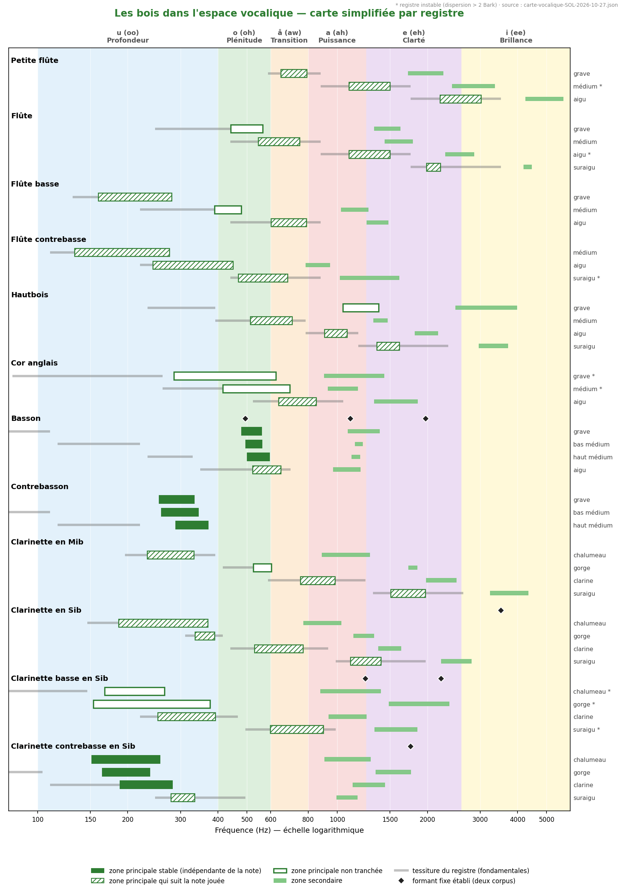
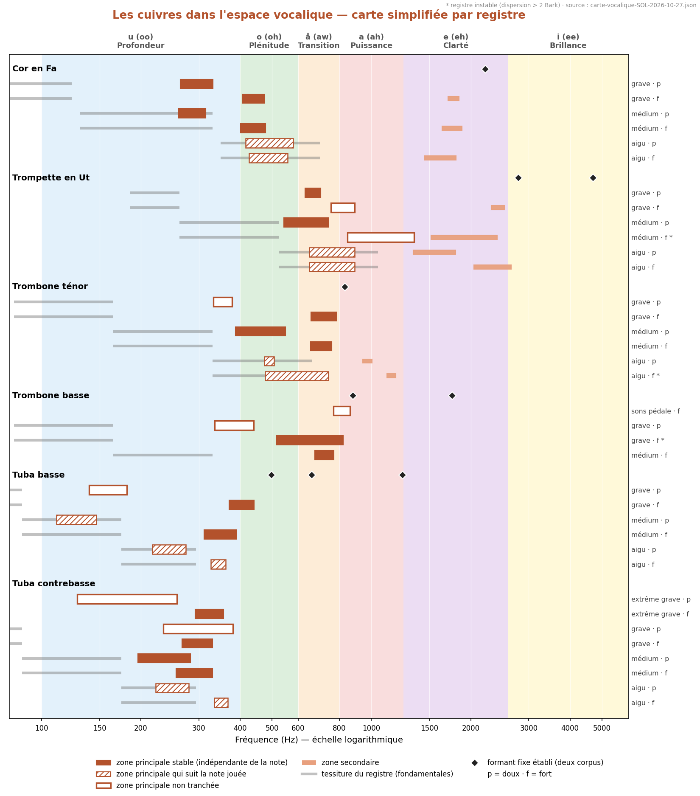
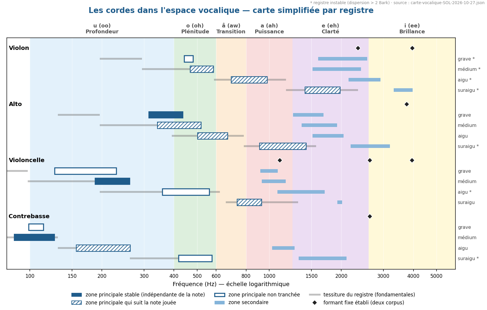

Sommaire › Synthèses



Aucune mesure nouvelle. Ces figures reprennent les valeurs de la carte vocalique (méthode 12) et des formants établis. Seule la présentation change : un axe des fréquences en hertz, les six zones vocaliques de la première étude en fond, à la manière de Meyer, de Reuter ou de McCarty. C'est la figure du cours d'orchestration ; la carte en Bark reste la figure de l'étude.
Chaque ligne est un registre de l'instrument, tel que le définit
registres.md. Pour les bois et les cordes, les dynamiques sont réunies : leur
effet y est faible. Pour les cuivres, chaque registre a deux lignes, p
(doux) et f (fort), parce que la dynamique y déplace la zone principale de
près d'une octave — une moyenne n'aurait pas de sens.
| Signe | Sens |
|---|---|
| barre pleine | zone principale stable : elle ne bouge pas quand la note change. C'est ce que l'orchestrateur appelle un formant. |
| barre hachurée | la zone principale suit la note jouée : c'est la fondamentale, ou l'harmonique le plus fort. La couleur du registre est sa hauteur, non une résonance de l'instrument. |
| contour seul | non tranché : la zone ne suit pas visiblement la note, mais sa stabilité n'est pas montrée. À lire comme une tendance. |
| barre claire | zone secondaire |
| trait gris | tessiture du registre : les fondamentales qu'il couvre. Quand la barre principale est posée dessus, elle suit la note. |
| losange / tireté | formant fixe établi par deux corpus de provenances distinctes |
| * ou (instable) | la zone varie de plus de 2 Bark à l'intérieur du registre : la valeur est une tendance |
La largeur d'une barre est la dispersion interquartile mesurée dans le registre, reconvertie en hertz. Elle est plafonnée à 3 Bark à l'affichage.
Comment « stable » est décidé. Une zone est dite stable quand elle reste à
trois demi-tons près d'un registre au registre voisin, à nuance égale, alors que
les fondamentales y montent d'environ une octave. Pour les cordes, les
conclusions du test de pente note par note (_RESONANCE-DE-CAISSE.md) priment :
alto au grave et violoncelle au médium stables, alto au médium qui suit la note,
violon, violoncelle et contrebasse au grave non tranchés. Pour les cuivres, l'aigu et le
suraigu sont toujours lus comme « suit la note » : F1 y vaut la fondamentale à
peu près (borne de lecture établie en C7, _REGISTRES-PEDALE.md). Une zone « suit la
note » quand la carte vocalique la marque F1=f0, ou, pour les cellules à un
seul maximum où ce test n'existe pas, quand elle tombe dans la tessiture du
registre sans tenir d'un registre à l'autre.
Le basson est le cas d'école. Sa zone principale reste entre 500 et 590 Hz sur toute sa tessiture, dans la zone o — Plénitude : c'est le formant de basson de la littérature. Seuls le contrebasson et la clarinette contrebasse tiennent eux aussi une zone fixe, plus bas, dans la zone u.
La plupart des bois aigus n'ont pas de voyelle propre. Flûte, hautbois, clarinettes au-dessus du chalumeau : la zone principale est hachurée. Ces instruments prennent la couleur de la zone où se trouve la note. On l'orchestre par le registre, non par un formant.
Les cuivres changent de zone avec la nuance. Au registre grave, le trombone ténor est vers 350 Hz (u) au doux et vers 720 Hz (å) au fort. Ce n'est pas la note qui monte : c'est le spectre qui s'enrichit. Au fort, la zone tient d'un registre à l'autre — cor vers 440 Hz, trombones vers 700 Hz, tubas vers 300–400 Hz.
Les cordes ont une résonance de caisse là où leur tessiture passe sous elle. Alto au grave (vers 375–395 Hz), violoncelle au médium (vers 215–220 Hz). Plus haut, elles suivent la note comme les bois.
Les noms de zone ne sont pas les voyelles françaises du site. La première étude, comme Meyer, nomme une voyelle d'après une zone d'énergie. La carte vocalique du site nomme la voyelle française la plus proche d'après le couple (F1, F2), en voix d'homme. Le basson est ici dans la zone o ; sur la carte en Bark, sa voyelle est /œ/–/ɔ/. Les deux lectures ne se contredisent pas : elles ne répondent pas à la même question.
Les registres trop peu peuplés sont absents (moins de cinq échantillons) : suraigu du piccolo, aigu du contrebasson, aigu du trombone basse.
Un seul corpus. Les figures sont tracées sur SOL2020 + Yan_Adds. La comparaison entre corpus est sur la page La carte, corpus contre corpus.